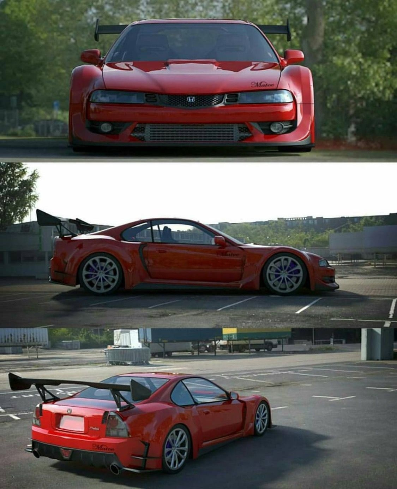
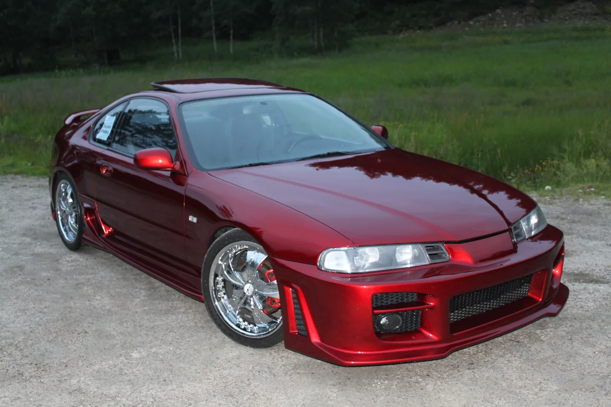
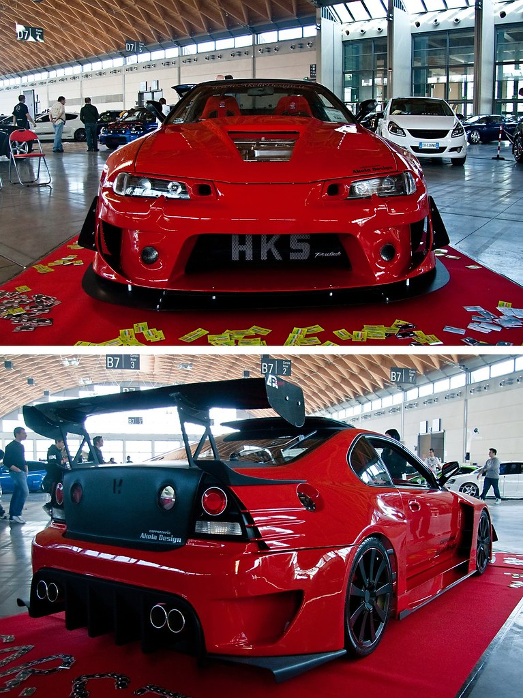

Миссия: Демонстрация инженерного превосходства
Четвертое поколение Honda Prelude (кодовые кузова
BB1, BB2, BA8) продолжило традицию модели быть технологическим флагманом и испытательным полигоном для инноваций Honda в сегменте спортивных купе. Если Civic был задорным и доступным, а Accord — сбалансированным и практичным, то Prelude позиционировался как интеллектуальный атлет — автомобиль для водителя, ценящего не только динамику, но и передовые инженерные решения.
Аэродинамический облик и кабино-центричная компоновка
Дизайн, созданный под руководством Макото Исикавы, стал революцией. Автомобиль получил невероятно чистые, обтекаемые формы с коэффициентом аэродинамического сопротивления
Cd=0.32, что для начала 90-х было выдающимся показателем.
- Визитной карточкой стала панорамная стеклянная крыша (Glass Roof), занимавшая почти всю площадь крыши и создававшая уникальное ощущение простора в салоне.
- Была применена кабино-центричная компоновка: салон и водитель были смещены к центру автомобиля, а колеса — к углам, что улучшило распределение веса и устойчивость.
- Низкая и широкая стойка, скошенный задок и утопленные фары подчеркивали спортивный, «прижатый» к дороге характер автомобиля.
Шасси и инновационные системы
С самого начала это поколение было ориентировано на высочайший уровень управляемости. Основой стала совершенно новая платформа с полностью независимой подвеской на двойных поперечных рычагах (Double Wishbone) спереди и сзади. Однако главной «фишкой», унаследованной от третьего поколения и доведенной до совершенства, стала опциональная система полного управления
4WS (4 Wheel Steering) второго поколения. Она теперь была электрогидравлической и еще более интеллектуальной, улучшая маневренность на низкой скорости и стабильность на высокой.
Базовые и топовые силовые агрегаты
Линейка двигателей была сформирована вокруг двух основных рядных 4-цилиндровых блоках:
- H23A (2.3 л DOHC, 160 л.с.): Базовый для многих рынков (включая США и Европу). Атмосферный, с отличной тягой на средних оборотах и характерной для Honda надежностью. На японском рынке в версии Si существовала его форсированная версия H23A DOHC VTEC (190-200 л.с.).
- H22A (2.2 л DOHC VTEC, 190-220 л.с.): Легендарный высокооборотный мотор, ставший сердцем топовых комплектаций Si VTEC и Type S. Его фирменный «вопль» при включении системы VTEC после 5500 об/мин стал одним из звуковых символов 90-х. Именно эта версия с механической коробкой передач считалась эталоном для истинных ценителей.


Система полного управления 4WS и ее эволюция
Система
4WS была не просто маркетинговым ходом, а реально работающей технологией.
- На малых скоростях (до ~30 км/ч) задние колеса поворачивались в противофазе к передним (максимум до 5.3°), значительно уменьшая радиус разворота.
- На высоких скоростях задние колеса поворачивались в одной фазе с передними (максимум до 1.5°), обеспечивая эффект «виртуального удлинения колесной базы» и феноменальную устойчивость в быстрых поворотах и при перестроениях.
- В середине жизненного цикла (с 1994 года) на смену 4WS пришла новая, еще более продвинутая система ATTS (Active Torque Transfer System) на версии Prelude Type S. Это была механическая система, перераспределяющая крутящий момент между передними колесами в повороте, борясь с недостаточной поворачиваемостью и делая управление невероятно точным и нейтральным.
Комплектации и рынки
Помимо базовых версий, выделялись:
-
Prelude Si (с H23A или H22A, в зависимости от рынка).
-
Prelude SiR (японский рынок) и Prelude VTEC (международный) — с двигателем H22A.
-
Prelude Type S (японский рынок) — вершина эволюции с двигателем H22A, системой ATTS, облегченными компонентами и доработанной подвеской.
Феномен «интеллектуального» спортивного купе
Honda Prelude BB никогда не был самым мощным или радикальным купе своего времени. Его уникальность — в интеллектуальном подходе к спортивности. Он предлагал не грубую силу, а изысканную управляемость, подкрепленную передовыми технологиями вроде 4WS и ATTS. Это был автомобиль для гурманов вождения, способный доставлять глубокое интеллектуальное удовольствие от точности работы всех систем.
Плюсы и минусы владения сегодня
Плюсы:
- Иконический, нестареющий дизайн и уникальная стеклянная крыша.
- Феноменальная, «взрослая» управляемость и обратная связь от руля.
- Культовые высокооборотные двигатели H22A VTEC с неповторимым характером.
- Высокое качество сборки и материалов салона для своего класса.
- Статус редкого и технологически продвинутого автомобиля своей эпохи.
Минусы и «болевые точки»:
- Сложность и дороговизна ремонта систем 4WS и ATTS. При выходе из строя их часто просто отключают, теряя главную «изюминку».
- Коррозия: Пороги, арки колес, крылья, элементы подвески.
- Двигатель H22A: Требователен к обслуживанию. Типичные проблемы: расход масла, износ гидрокомпенсаторов и механизма VTEC, при неправильной эксплуатации — риск прогара клапанов.
- Редкость и цена запчастей, особенно для уникальных систем (ATTS, 4WS) и элементов кузова.
- Салон: Может потребовать ремонта или замены просевшей обшивки потолка (из-за стеклянной крыши) и потрескавшегося пластика.
Культурное значение
Четвертое поколение Prelude осталось в истории как последний «чистый», бескомпромиссно-инженерный Prelude перед сменой концепции в пятом поколении. Оно олицетворяет пик инженерной уверенности Honda 90-х, когда компания не боялась оснащать серийный автомобиль экспериментальными, сложными системами. Prelude занял уникальную нишу «мыслящего спортсмена» в тени более агрессивных Supra, Skyline и 3000GT, предлагая изысканность и техническую глубину вместо показной мощи. Его образ стал культовым для поколения, выросшего на компьютерных играх и технологическом прогрессе, видевшего в нем идеал «хай-тек» купе из будущего. Именно эта модель окончательно закрепила за Honda репутацию инноватора не только в двигателестроении, но и в динамике шасси. Сегодня это желанный объект для коллекционеров и ценителей японского автопрома — автомобиль, который нужно не просто водить, а понимать. Он напоминает об эпохе, когда спортивность измерялась не только лошадиными силами, но и интеллектом инженерных решений.

 89081317488
89081317488

 8(908)131-74-88
8(908)131-74-88.svg) fayther2@yandex.ru
fayther2@yandex.ru